공조냉동기계기사(구) (2014-05-25 기출문제)
1과목: 기계열역학
1. 다음 중 경로 함수(path function)인 것은 어느 것인가?
- 엔탈피
- 열
- 압력
- 엔트로피
(정답률: 71%)

2. 이상기체의 엔탈피와 내부에너지에 대한 설명으로 적절한 것은?
- 압력만의 함수이다.
- 체적만의 함수이다.
- 온도만의 함수이다.
- 온도 및 압력의 함수이다.
(정답률: 69%)
3. 다음 중 증기압축식 냉동기에서 일반적으로 사용되지 않는 것은?
- 응축기
- 압축기
- 터빈
- 팽창밸브
(정답률: 67%)
4. 중력가속도가 9.8m/s2 일 때 250kg의 물체가 200m의 높이로부터 땅으로 떨어질 경우 일을 열량으로 환산하면 약 몇 KJ인가?
- 79
- 117
- 203
- 490
(정답률: 67%)
5. 87℃의 물 1kg과 27℃의 물 1kg이 열의 손실 없이 직접 혼합될 때 생기는 엔트로피의 차로서 가장 적절한 것은? (단, 물의 비열은 4.18kJ/kg·K로 한다)
- 0.035 kJ/K
- 1.36 kJ/K
- 4.22 kJ/K
- 5.02 kJ/K
(정답률: 38%)
6. 이상기체의 비열에 대한 설명이다. 적절한 것은?
- 정적비열과 정압비열의 절대값의 차이가 엔탈피이다.
- 비열비는 기체의 종류에 관계없이 일정하다.
- 정압비열은 정적비열보다 크다.
- 일반적으로 압력은 비열보다 온도의 변화에 민감하다.
(정답률: 73%)
7. 실린더의 내경이 6.8cm, 행정이 8cm인 가솔린기관의 평균유효압력이 1200kPa일 때 이 기관의 1행정당 출력[kJ]으로 적절한 것은?
- 0.04
- 0.14
- 0.35
- 0.44
(정답률: 53%)
8. 실린더 내의 공기가 3kg 있다. 공기가 200kPa, 10℃인 상태에서 600kPa이 될때까지 ′PV1.3=일정′인 과정으로 압축된다. 이 과정에서 공기가 한 일은 약 몇kJ인가? (단, 공기의 기체상수 R은 0.287kJ/kg·K이다)
- -285
- -235
- 13
- 125
(정답률: 49%)
9. 공기 5kg을 압력이 일정한 상태에서 0℃에서 100℃까지 가열하고자 한다. 이때 필요한 열량[kJ]으로 적절한 것은? (단, 공기의 정압비열 CP(kJ/kg℃)=1.01+0.000079t(℃)이다.)
- 102
- 476
- 490
- 507
(정답률: 64%)
10. 10℃에서 160℃까지의 공기의 평균 정적비열이 0.7315kJ/kg·℃이다. 이 온도 변화에서 공기 1kg의 내부에너지 변화로 적절한 것은?
- 107.1 kJ
- 109.7 kJ
- 120.6 kJ
- 121.7 kJ
(정답률: 71%)
11. 실린더(cylinder)내의 유체가 주위에 36kJ/kg의 열을 방출하고, 68kJ/kg의 일을 받았다. 이 때 내부에너지의 변화로 적절한 것은?
- 32kJ/kg 증가
- 32kJ/kg감소
- 104kJ/kg증가
- 104kJ/kg감소
(정답률: 67%)
12. 수은주에 의해 측정된 대기압이 753mmHg일 때 진공도 90%의 절대 압력으로 적절한 것은? (단, 중력가속도는 9.8m/s2, 수은의 밀도는 13600kg/m3이다.)
- 약 200.08kPa
- 약 190.08kPa
- 약 100.04kPa
- 약 10.04kPa
(정답률: 46%)
13. 시간당 380ton의 물을 공급하여 수증기를 생산하는 보일러가 있다. 이 보일러에 공급하는 물의 엔탈피는 830kJ/kg이고, 생산되는 수증기의 엔탈피가 3230kJ/kg이라고 할 때, 발열량이 32000kJ/kg인 석탄을 시간당 34ton 씩 보일러에 공급한다면 이 보일러의 효율로 적절한 것은?
- 22.6%
- 39.5%
- 72.3%
- 83.8%
(정답률: 60%)
14. 증기압축 냉동장치에서 증발기를 지나는 냉매의 물리적 변화로서 적절한 것은? (단, 냉동장치는 이상적인 냉동사이클을 따른다)
- 압력이 증가한다.
- 엔트로피가 감소한다.
- 엔탈피가 증가한다.
- 비체적이 감소한다.
(정답률: 62%)
15. 물 2kg을 30℃에서 80℃까지 가열하였다. 이 과정 동안의 엔트로피 변화량으로 적절한 것은? (단, 물의 비열은 4.184kJ/kg· K로 일정하다.)
- 0.6391kJ/K
- 1.278kJ/K
- 4.100kJ/K
- 8.208kJ/K
(정답률: 57%)
16. 다음 중 열병합발전시스템에 대한 설명으로 적절한 것은?
- 증기 동력 시스템에서 전기와 함께 공정용 또는 난방용 스팀을 생산하는 시스템이다.
- 증기 동력 사이클 상부에 고온에서 작동하는 수은 동력 사이클을 결합한 시스템이다.
- 가스 터빈에서 방출되는 폐열을 증기동력 사이클의 열원으로 사용하는 시스템이다.
- 한 단의 재열사이클과 여러 단의 재생사이클의 복합 시스템이다.
(정답률: 61%)
17. 다음 중 가장 큰 에너지를 나타내는 것은?
- 100kW 출력의 엔진이 10시간 동안 한일
- 발열량 10000kJ/kg의 연료를 100kg 연소시켜 나오는 열량
- 대기압 하에서 10℃ 물 10 를 90℃로 가열하는데 필요한 열량(물의 비열은 4.2kJ/kg ℃이다.)
- 시속 100km로 주행하는 총 질량 2000kg인 자동차의 운동에너지
(정답률: 69%)
18. 카르노(Carnot) 열기관에 있어서 공급열량을 Q1, 방열량을 Q2로 할 때, 열효율[η]을 나타내는 식으로 적절한 것은?
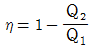
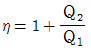
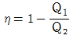
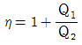
(정답률: 70%)
19. 완전히 단열된 실린더 안의 공기가 피스톤을 밀어 외부로 일을 하였을 때 일의 양으로 적합한 것은? (단, 절대량을 기준으로 한다)
- 공기의 내부에너지 차
- 공기의 엔탈피 차
- 공기의 엔트로피 차
- 단열되었으므로 일의 수행은 없다
(정답률: 64%)
20. 증기압축 냉동사이클(과열과 과냉이 없음)에서 응축온도가 일정할 때 증발온도가 높을수록 성능계수는 어떻게 되는가?
- 증가한다.
- 감소한다.
- 증가할 수도 있고, 감소할 수도 있다.
- 증발온도는 성능계수와 관계없다.
(정답률: 67%)
2과목: 냉동공학
21. 다음 중 압축방식에 의한 압축기의 분류에 속하지 않는 것은?
- 왕복동식 압축기
- 흡수식 압축기
- 회전식 압축기
- 스크류식 압축기
(정답률: 76%)
22. 어떤 냉동실의 온도를 -5℃로 유지하기 위하여 매시간당 150000kcal의 열량을 제거해야 한다. 이 제거열량을 냉동기로 제거한다면 이 냉동기의 소요마력은 약 얼마인가? (단, 냉동기의 방열온도는 10℃, 1HP=632kcal/h로 한다)
- 16.5HP
- 15.2HP
- 14.1HP
- 13.3HP
(정답률: 36%)
23. 다음은 냉동기에 관한 설명이다. 가장 적절한 것은 어느 것인가?
- 열에너지를 기계적 에너지로 변환시키는 것이다.
- 요구되는 소정의 장소에서 열을 흡수하여 다른 장소에 열을 방출하도록 기계적 에너지를 사용한 것이다.
- 높은 온도에서 열을 흡수하여 낮은 온도 장소에 열을 발산하도록 기계적 에너지를 사용한 것이다.
- 증기 원동기와 비슷한 원리이며 외연기관이다.
(정답률: 67%)
24. 냉동사이클의 응축열량에 대한 설명이다. 적절하지 못한 것은 어느 것인가?
- 응축기 입구 냉매증기의 엔탈피와 응축기 출구 냉매액의 엔탈피 차로 나타낸다.
- 증발기에서 저온의 물체로부터 흡수한 열량과 압축기의 압축일량을 합한 값이다.
- 응축열량은 증발온도와 응축온도에 따라 다르다.
- 증발온도가 낮아져도 응축온도의 변화는 없다.
(정답률: 66%)
25. 냉동기에 사용되고 있는 냉매로 대기압에서 비등점이 가장 낮은 냉매는 다음중 어느 것인가?
- SO2
- NH3
- CO2
- CH3Cl
(정답률: 52%)
26. 가역 카르노사이클에서 고온부 30℃, 저온부 -10℃로 운전되는 열기관의 효율은 약 얼마인가?
- 7.58
- 6.58
- 0.15
- 0.13
(정답률: 55%)
27. 냉각수 입구온도 16℃, 냉각수 출구온도 24℃, 냉각수량 200ℓ/min, 응축기의 냉각면적 20m2, 응축기의 열통과율 800kcal/m2h℃ 의 조건으로 작동되는 냉동장치의 수냉식 응축기에서 냉매와 냉각수의 산술평균온도차는?
- 6℃
- 16℃
- 8℃
- 18℃
(정답률: 54%)
28. 냉매가 누설되거나 냉매충전량이 부족시 발생할 수 있는 현상으로 적절하지 못한 것은?
- 토출압력이 너무 낮다.
- 흡입압력이 너무 낮다.
- 압축기의 정지시간이 길다.
- 압축기가 시동하지 않는다.
(정답률: 51%)
29. 다음은 만액식 증발기에 대한 설명이다. 적절하지 못한 것은?
- 증발기내에서는 냉매액이 항상 충만 되어있다.
- 증발된 가스는 액 중에서 기포가 되어 상승 분리된다.
- 피냉각 물체와 전열면적이 거의 냉매액과 접촉하고 있다.
- 전열작용이 건식증발기에 비해 미흡하지만 냉매액은 거의 사용되지 않는다.
(정답률: 70%)
30. 냉동장치의 불응축가스를 제거하는 가스퍼저(gas purger)의 위치로 적절한 곳은 다음 중 어느 곳 인가?
- 고압 수액기 상부
- 저압 수액기 상부
- 유분리기 상부
- 액분리기 상부
(정답률: 66%)
31. 다음은 냉동장치의 윤활 목적을 나타낸 것이다. 적절하지 못한 것은?
- 마모방지
- 부식방지
- 냉매 누설방지
- 동력손실 증대
(정답률: 79%)
32. 냉동장치에서 증발온도를 일정하게 유지하고 응축온도를 높일 때 일어나는 현상을 나타낸 것으로 적절한 것은?
- 성적계수 증가
- 압축일량 감소
- 토출가스온도 감소
- 플래쉬가스 발생량 증가
(정답률: 75%)
33. 안정적으로 작동되는 냉동시스템에서 팽창밸브를 과도하게 닫았을 때 일어나는 현상으로 적절하지 못한 것은?
- 흡입압력이 낮아지고 증발기 온도가 저하한다.
- 압축기의 흡입가스가 과열된다.
- 냉동능력이 감소한다.
- 압축기의 토출가스 온도가 낮아진다.
(정답률: 62%)
34. 일반 냉동장치의 팽창밸브의 작용에 대한 설명으로 적절한 것은 다음 중 어느 것인가?
- 고압축의 냉매액은 팽창밸브를 통하면서 기화하여 고온 가스로 되어 증발기로 들어간다.
- 냉매액은 팽창밸브를 통하여 액체가 될때까지 감압되어 증발기로 들어가 열을 얻어 가스로 된다.
- 냉매액은 팽창밸브에서 교축작용에 의해 저압으로 된다. 그 때 일부는 가스로 되어 증발기로 들어간다.
- 냉매액은 팽창밸브에서 교축작용에 의해 고압으로 된다. 그 때 일부가 가스로 되어 증발기로 들어간다.
(정답률: 67%)
35. 다음은 냉매배관의 토출관경을 결정시 주의사항이다. 적절하지 못한 것은?
- 토출관에 의해 발생하는 전 마찰손실은 0.2kgf/cm2 를 넘지 않도록 할 것
- 지나친 압력손실 및 소음이 발생하지 않을 정도로 속도를 억제할 것(25m/s이하)
- 압축기와 응축기가 같은 높이에 있을 경우에는 일단 수평관으로 설치하고 상향구배를 할 것
- 냉매가스 중에 녹아있는 냉동기유가 확실하게 운반될만한 속도(수평관 3.5m/s이상, 상승관 6m/s 이상)가 확보될 것
(정답률: 64%)
36. 실린더 직경 80mm, 행정 50mm, 실린더의 수 6개, 회전수 1750rpm인 왕복동식 압축기의 피스톤 압출량은 약 몇 m3/h인가?
- 178
- 168
- 158
- 188
(정답률: 53%)
37. 냉동장치의 냉매의 엔탈피가 압축기 입구 150kcal/kg, 압축기 출구 166kcal/kg, 팽창밸브 입구에서 110kcal/kg 인 경우 이 냉동장치의 성적계수는?
- 0.4
- 1.4
- 2.5
- 3.5
(정답률: 61%)
38. 외기온도가 30℃이며 냉장고의 실온이 -5℃, 냉장고 벽의 열통과율이 0.32kcal/m2h℃, 냉장고 벽면적이 700m2 일 때 이 냉장고 벽을 통한 침입열량은 약 몇 kcal/h인가? (단, 열손실은 무시한다.)
- 6720kcal/h
- 7840kcal/h
- 8200kcal/h
- 8750kcal/h
(정답률: 73%)
39. 열의 종류에 대한 설명이다. 가장 적절하게 설명한 것은?
- 고체에서 기체가 될 때에 필요한 열을 증발열이라 하며 이를 감열이라 한다.
- 온도의 변화를 일으켜 온도계에 나타나는 열을 잠열이라 한다.
- 기체에서 액체로 될 때 제거해야 하는 열은 응축열이라 하며 이를 감열이라 한다.
- 고체에서 액체로 될 때 필요한 열은 융해열이라 하며 이를 잠열이라 한다.
(정답률: 67%)
40. 윤활유가 유동하는 최저온도인 유동점은 응고온도보다 몇 도 정도 높은가?
- 2.5℃
- 5℃
- 7.5℃
- 10℃
(정답률: 49%)
3과목: 공기조화
41. 다음 중 일반 공기 냉각용 냉수코일에 가장 많이 적용되는 코일의 열수로서 적절한 것은?
- 0.5 - 1
- 1.5 - 2
- 3 - 3.5
- 4 - 8
(정답률: 68%)
42. 다음 중 습공기의 상태변화에 대한 설명으로 적절하지 못한 것은?
- 습공기를 냉각하면 건구온도와 습구온도가 감소한다.
- 습공기를 냉각ㆍ가습하면 상대습도와 절대습도가 증가한다.
- 습공기를 등온감습하면 노점온도와 비체적이 감소한다.
- 습공기를 가열하면 습구온도와 상대습도가 증가한다.
(정답률: 57%)
43. 다음은 공기조화 부하를 나타낸 것이다. 잠열부하를 포함한 것은?
- 외벽을 통한 손실열량
- 침입외기에 의한 취득열량
- 유리창을 통한 관류 취득량
- 지하층 바닥을 통한 손실열량
(정답률: 62%)
44. 다음 중 습공기선도(T-x선도)상에서 알수 없는 것은?
- 엔탈피
- 습구온도
- 풍속
- 상대습도
(정답률: 74%)
45. 다음 중 인체에 해가 되지 않는 탄산가스(CO2)의 실내 한계 오염농도는?
- 500PPM(0.⑤%)
- 1000PPM(0.1%)
- 1500PPM(0.15%)
- 2000PPM(0.2%)
(정답률: 66%)
46. 덕트내 풍속을 측정하는 피토관(pitot tube)을 이용하여 전압 23.8mmAq, 정압 10mmAq를 측정하였다. 이 경우 덕트내의 풍속으로 적절한 것은?
- 10m/s
- 15m/s
- 20m/s
- 25m/s
(정답률: 49%)
47. 다음은 습공기의 습도 표시 방법을 설명한 것이다. 적절하지 못한 것은?
- 절대습도는 건공기중에 포함된 수증기량을 나타낸다.
- 수증기분압은 절대습도에 반비례 관계가 있다.
- 상대습도는 습공기의 수증기 분압과 포화공기의 수증기 분압과의 비로 나타낸다.
- 비교습도는 습공기의 절대습도와 포화공기의 절대습도와의 비로 나타낸다.
(정답률: 55%)
48. 공기조화설비의 구성에서 각종 설비별 기기로써 적절하게 짝지어진 것은?
- 열원설비 - 냉동기, 보일러, 히트펌프
- 열교환설비 - 열교환기, 가열기
- 열매 수송설비 - 덕트, 배관, 오일펌프
- 실내유니트 - 토출구, 유인유니트, 자동제어기기
(정답률: 69%)
49. 다음의 설명 중 복사 냉난방방식(panelair system)에 대한 설명으로 적절하지 못한 것은?
- 건물의 축열을 기대할 수 있다.
- 쾌감도가 전공기식에 비해 떨어진다.
- 많은 환기량을 요하는 장소에 부적당하다.
- 냉각패널에 결로 우려가 있다.
(정답률: 65%)
50. 공조방식에 관한 다음의 설명 중 가변풍량 덕트방식에 관한 설명으로 적절하지 못한 것은?
- 운전비 및 에너지의 절약이 가능하다.
- 공조해야 할 공간의 열부하 증감에 따라 송풍량을 조절할 수 있다.
- 다른 난방방식과 동시에 이용할 수 없다.
- 실내 간막이 변경이나 부하의 증감에 대처하기 쉽다.
(정답률: 69%)
51. 6인용 입원실이 100실인 병원의 입원실 전체 환기를 위한 최소 신선 공기량으로 적절한 것은? (단, 외기 중 CO2함유량은 0.0003m3/m3, 실내 CO2의 허용농도는 0.1%, 재실자 1인당의 CO2발생량은 0.015m3/h이다)
- 약 6857m3/h
- 약 8857m3/h
- 약 10857m3/h
- 약 12857m3/h
(정답률: 53%)
52. 냉각코일의 장치노점온도(ADP)가 7℃이고, 여기를 통과하는 입구공기의 온도 27℃라 한다. 코일의 바이패스 팩터를 0.1이라고 할 때 코일 출구공기의 온도는?
- 8.0℃
- 8.5℃
- 9.0℃
- 9.5℃
(정답률: 44%)
53. 다음은 공기조화에 대하여 설명한 것이다. 적절하지 못한 것은?
- VAV 방식을 가변풍량 방식이라고 하며 실내부하 변동에 대해 송풍온도를 변화시키지 않고 송풍량을 변화시키는 방식으로 제어한다.
- 외벽과 지붕 등의 열통과율은 벽체를 구성하는 재료의 두께가 두꺼울수록 열통과율은 작아진다.
- 냉방 시 유리창을 통한 열부하는 태양 복사열과 실내외 공기의 온도차에 의한 관류열 2종류가 있다.
- 인체로부터의 발열량은 현열 및 잠열이 있으며 주위온도가 상승하면 둘 다 열량이 많아진다.
(정답률: 54%)
54. 노통 보일러는 지름이 큰 원통형 보일러동(shell)에 큰 노통을 설치한 것으로서 노통이 2개 있는 보일러는 어느 것인가?
- Lancashire 보일러
- Drum 보일러
- Shell 보일러
- Cornish보일러
(정답률: 56%)
55. 다음은 내연식 보일러의 특징을 설명한 것이다. 적절하지 못한 것은?
- 설치면적을 좁게 차지한다.
- 복사열의 흡수가 크다.
- 노벽에 의한 열손실이 적다.
- 완전연소가 가능하다.
(정답률: 59%)
56. 다음 중 증기난방의 설명으로 적절한 것은?
- 예열시간이 짧다.
- 실내온도의 조절이 용이하다.
- 방열기 표면의 온도가 낮아 쾌적한 느낌을 준다.
- 실내에서 상하온도차가 작으며, 방열량의 제어가 다른 난방에 비해 쉽다.
(정답률: 59%)
57. 각종 공기조화방식 중에서 개별방식의 특징으로 적절한 것은?
- 수명은 대형기기에 비하여 짧다.
- 외기냉방이 어느 정도 가능하다.
- 실 건축구조 변경이 어렵다.
- 냉동기를 내장하고 있으므로 일반적으로 소음이 작다.
(정답률: 40%)
58. 각 난방방식에 의한 일반적인 실내 상하의 온도분포를 나타낸 그림에서 이 중 바닥복사난방방식에 의한 것은 어느 것인가?
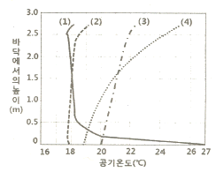
- (1)
- (2)
- (3)
- (4)
(정답률: 66%)
59. 다음의 각종 기기 중 온수난방 설비용기기가 아닌 것은?
- 릴리프 밸브
- 순환펌프
- 관말트랩
- 팽창탱크
(정답률: 68%)
60. 다음 중 보일러의 정격부하를 나타낸 것으로 적절한 것은?
- 난방부하+급탕부하+배관부하+예열부하
- 난방부하+배관부하+예열부하-급탕부하
- 난방부하+급탕부하+배관부하-예열부하
- 난방부하+급탕부하+배관부하
(정답률: 67%)
4과목: 전기제어공학
61. 입력단자 A, B 중 모두 “OFF” 되어야 출력이 “ON” 되고, 그 중 어느 한 단자라도 “ON” 되면 출력이 “OFF“ 되는 회로는?
- AND회로
- OR회로
- NOT회로
- NOR회로
(정답률: 54%)
62. 그림에 해당하는 함수를 라플라스 변환한 것으로 적절한 것은?
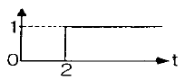
- s/1
- s-2/1
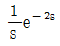
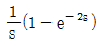
(정답률: 35%)
63. 입력으로 단위 계단함수 u(t)를 가했을때, 출력이 그림과 같은 조절계의 기본 동작은?
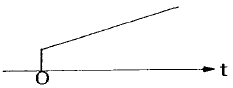
- 2위치 동작
- 비례 동작
- 비례 적분 동작
- 비례 미분 동작
(정답률: 54%)
64. 컴퓨터실의 온도를 항상 18℃로 유지하기 위하여 자동냉난방기를 설치하였다. 이 자동 냉난방기의 제어는?
- 비율제어
- 추종제어
- 정치제어
- 서보제어
(정답률: 53%)
65. 다음은 피드백 제어시스템의 피드백 효과를 나타낸 것이다. 적절하지 못한 것은?
- 대역폭 증가
- 정확도 개선
- 시스템 간소화 및 비용 감소
- 외부 조건의 변화에 대한 영향 감소
(정답률: 71%)
66. 전기자철심을 규소 강판으로 성층하는 주된 이유로 적절한 것은?
- 정류자면의 손상이 적다.
- 가공하기 쉽다.
- 철손을 적게 할 수 있다.
- 기계손을 적게 할 수 있다.
(정답률: 66%)
67. 200V, 300W의 전열선의 길이를 1/3로 하여 200V의 전압을 인가하면 이 때의 소비전력은 몇 W인가?
- 100
- 300
- 600
- 900
(정답률: 49%)
68. 다음 중 직류 전동기의 규약효율을 구하는 식으로 적절한 것은?
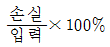
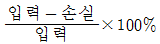
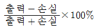
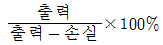
(정답률: 72%)
69. 전기 단위 중 kVA는 다음 중 무엇을 나타내는 단위인가?
- 유효전력
- 피상전력
- 효율
- 무효전력
(정답률: 63%)
70. 다음의 제어방식 중 무인 엘리베이터의 자동제어로 가장 적합한 제어방식은?
- 추종제어
- 정치제어
- 프로그램제어
- 프로세스제어
(정답률: 76%)
71. 3상 유도전동기의 출력이 5kW, 전압 200V, 효율 90%, 역률이 80%일 때 이 전동기에 유입되는 선전류는 약 몇 A인가?
- 15
- 20
- 25
- 30
(정답률: 54%)
72. 논리식
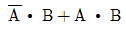
와 같은 것은?- B
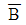
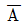
- A
(정답률: 73%)
73. 다음 중 프로세스제어에 속하는 제어량으로 적절한 것은?
- 온도
- 전류
- 전압
- 장력
(정답률: 73%)
74. 다음의 브리지 중 예비전원으로 사용되는 축전지의 내부 저항을 측정할 때 가장 적절한 것은?
- 캠벨 브리지
- 맥스웰 브리지
- 휘트스톤 브리지
- 코올라시 브리지
(정답률: 58%)
75. 다음은 서보 전동기의 특징을 설명한 것이다. 적절하지 못한 것은?
- 정ㆍ역회전이 가능하여야 한다.
- 직류용은 없고 교류용만 있어야 한다.
- 속도제어 범위와 신뢰성이 우수하여야 한다.
- 급가속, 급감속이 용이하여야 한다.
(정답률: 75%)
76. 실리콘 제어정류기(SCR)는 다음 중 어떤 형태의 반도체인가?
- P형 반도체
- N형 반도체
- PNPN형 반도체
- PNP형 반도체
(정답률: 68%)
77. 그림과 같이 직류 전력을 측정하였다. 가장 정확하게 측정한 전력은? (단, Ri : 전류계의 내부저항, Re : 전압계의 내부저항이다.)
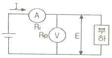
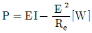
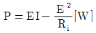
- P=EI-2ReI[W]
- P=EI-2RiI[W]
(정답률: 55%)
78. 신호흐름도와 등가인 블록선도를 그리려고 한다. 이 때 G(s)로 알맞은 것은?
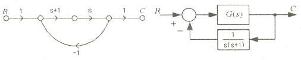
- s
- 1/s+1
- 1
- s(s+1)
(정답률: 51%)
79. 직류자 전동기를 전기자 전류 100A, 단자전압 200V, 회전속도 1200rpm으로 운전하고 있다. 전기자 회로의 저항이 0.2Ω일 때 역기전력은 몇 V인가?
- 80
- 120
- 180
- 210
(정답률: 37%)
80. 평행한 두 도체에 같은 방향의 전류를 흘렸을 때 두 도체 사이에 작용하는 힘에 대한 설명으로 적절한 것은?
- 반발력
- 힘이 작용하지 않는다.
- 흡인력
- I/2πr의 힘
(정답률: 64%)
5과목: 배관일반
81. 펌프의 양수량 60m3/min, 전양정 20m일 때, 펌프의 효율이 60%인 벌류트펌프(volute pump)로 구동할 경우 필요한 동력은 약 kW인가?
- 196.1kW
- 200kW
- 326.8kW
- 4⑤.8kW
(정답률: 39%)
82. 다음 중 저압 가스관에 의한 가스 수송에 있어서 압력손실과 관계가 가장 먼 것은?
- 가스관의 길이
- 가스의 압력
- 가스의 비중
- 가스관의 내경
(정답률: 46%)
83. 다음은 냉동설비배관에 있어서 액분리기와 압축기 사이의 냉매배관을 할 때의 구배를 나타낸 것이다. 가장 적절한 것은?
- 1/100정도의 압축기 측 상향 구배로 한다.
- 1/100정도의 압축기 측 하향 구배로 한다.
- 1/200정도의 압축기 측 상향 구배로 한다.
- 1/200정도의 압축기 측 하향 구배로 한다.
(정답률: 57%)
84. 다음은 수배관을 할 경우의 부식방지를 위한 방법이다. 적절하지 못한 것은?
- 밀폐 사이클의 경우 물을 가득 채우고 공기를 제거한다.
- 개방 사이클로 하여 순환수가 공기와 충분히 접하도록 한다.
- 캐비테이션을 일으키지 않도록 배관한다.
- 배관에 방식도장을 한다.
(정답률: 73%)
85. 다음은 지역난방의 특징을 설명한 것이다. 적절하지 못한 것은?
- 대규모 열원기기를 이용한 에너지의 효율적 이용이 가능하다.
- 대기 오염물질이 증가한다.
- 도시의 방재수준 향상이 가능하다.
- 사용자에게는 화재에 대한 우려가 적다.
(정답률: 75%)
86. 가스 사용시설의 건축물내의 매설배관으로 적절하지 못한 배관은?
- 이음매 없는 동관
- 배관용 탄소강관
- 스테인리스 강관
- 가스용 금속플렉시블호스
(정답률: 36%)
87. 다음은 공기조화설비 중 복사난방의 패널형식을 나나낸 것이다. 해당되지 않는 것은?
- 바닥패널
- 천장패널
- 벽패널
- 유닛패널
(정답률: 69%)
88. A와 B의 배관접속에 있어서 용접 시공시의 용접부위 결함을 도시한 것이다. 무슨 결함인가?
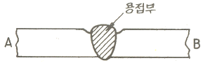
- 언더컷
- 오버랩
- 융합불량
- 크레이터
(정답률: 71%)
89. 다음은 온수난방설비의 온수배관 시공법을 설명한 것이다. 적절하지 못한 것은?
- 수평배관에서 관의 지름을 바꿀 때에는 편심리듀서를 사용한다.
- 배관재료는 내열성을 고려한다.
- 공기가 고일 염려가 있는 곳에는 공기 배출을 고려한다.
- 팽창관에는 슬루스 밸브를 설치한다.
(정답률: 70%)
90. 다음 중 증기난방을 응축수환수법에 의하여 분류 시 적절하지 못한 것은?
- 기계 환수식
- 하트포드 환수식
- 중력 환수식
- 진공 환수식
(정답률: 69%)
91. 동관의 이음 방법으로서 지름 20mm이하의 동관을 이음하거나 기계의 점검, 보수, 기타 관을 분리하기 쉽게 하기 위한 이음방법을 나타낸 것은?
- 플레어 접합
- 슬리브 접합
- 플랜지 접합
- 사이징 접합
(정답률: 60%)
92. 다음은 배수 및 통기설비의 배관시공에 대한 주의 사항을 나타낸 것이다. 적절 하지 못한 것은?(오류 신고가 접수된 문제입니다. 반드시 정답과 해설을 확인하시기 바랍니다.)
- 우수 수직관에 배수관을 연결하여서는 안 된다.
- 오버플로우관은 트랩의 유입구측에 연결하여야 한다.
- 배수 수평지관의 관경은 이것과 접속하는 기구 배수관의 최대관경 이상으로 한다.
- 배수관은 하류방향으로 갈수록 관의 지름을 작게 설계한다.
(정답률: 55%)
93. 다음 중 배수단위가 가장 큰 위생기구는?
- 세정밸브식 대변기
- 벽걸이식 소변기
- 치과용 세면기
- 주택용 샤워기
(정답률: 73%)
94. 다음의 밸브 중 냉동장치의 액순환펌프의 토출측 배관에 설치되어 역류를 방지하기 위한 밸브는?
- 게이트 밸브
- 콕
- 글로브 밸브
- 체크 밸브
(정답률: 72%)
95. 다음은 급탕배관의 시공에 대한 주의사항이다. 적절하지 못한 것은?(오류 신고가 접수된 문제입니다. 반드시 정답과 해설을 확인하시기 바랍니다.)
- 배관의 굽힘 부분에는 벨로우즈이음을 한다.
- 하향식 급탕주관의 최상부에는 공기빼기 장치를 설치한다.
- 팽창관의 관경은 겨울철 동결을 고려하여 25A 이상으로 한다.
- 단관식 급탕배관 방식에는 상향배관, 하향배관 방식이 있다.
(정답률: 57%)
96. 통기관 시공시 배수 횡지관에서 통기관을 이어낼 때의 경사도는 얼마 이내로 하는 것이 적절한가? (단, 수직이음인 경우 제외한다)
- 45°
- 60°
- 70°
- 80°
(정답률: 70%)
97. 다음의 덕트기구 중 공기의 흐름방향을 조절할 수 있으나 풍량은 조절할 수 없고 주로 환기용 흡입구나 배기구로 사용되는 것은?
- 그릴(grilles)
- 디퓨저(diffusers)
- 레지스터(registers)
- 아네모스탯(anemostat)
(정답률: 57%)
98. 다음은 증기난방용 트랩을 나타낸 것이다. 증기와 응축수의 온도 차이를 이용하여 응축수를 배출하는 트랩은?
- 버킷 트랩(bucket trap)
- 디스크 트랩(disk trap)
- 벨로스 트랩(bellows trap)
- 플로트 트랩(float trap)
(정답률: 52%)
99. 다음 식은 저압가스 배관의 통과 유량을 구하는 공식이다. 공식 중의 L은 관의 길이(m)를 나타낸다. S가 나타내는 것은 다음 중 어느 것인가?
- 관의 내경
- 가스 비중
- 유량 계수
- 압력차
(정답률: 75%)
100. 다음 사무소 건물에서의 필요한 급수량은? (단, 건물의 연건평 30000m2, 건물의 유효면적 비율 60%, 건물의 유효면적당 거주인원 0.2인/m2, 1인 1일당 사용 급수량 100lit이다)
- 36m3/d
- 360m3/d
- 3600m3/d
- 360000m3/d
(정답률: 45%)